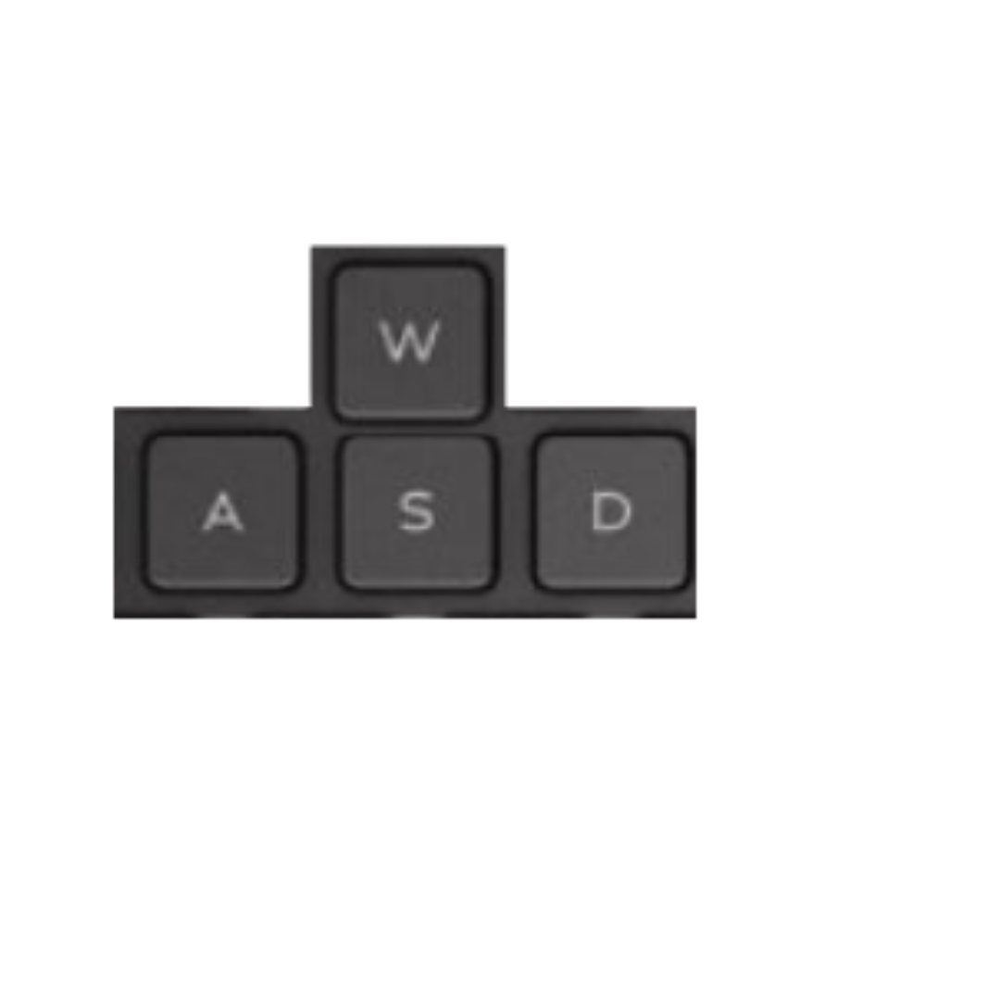
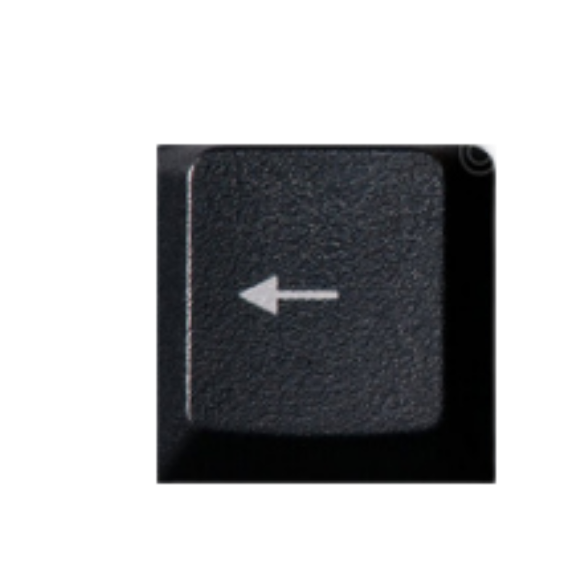
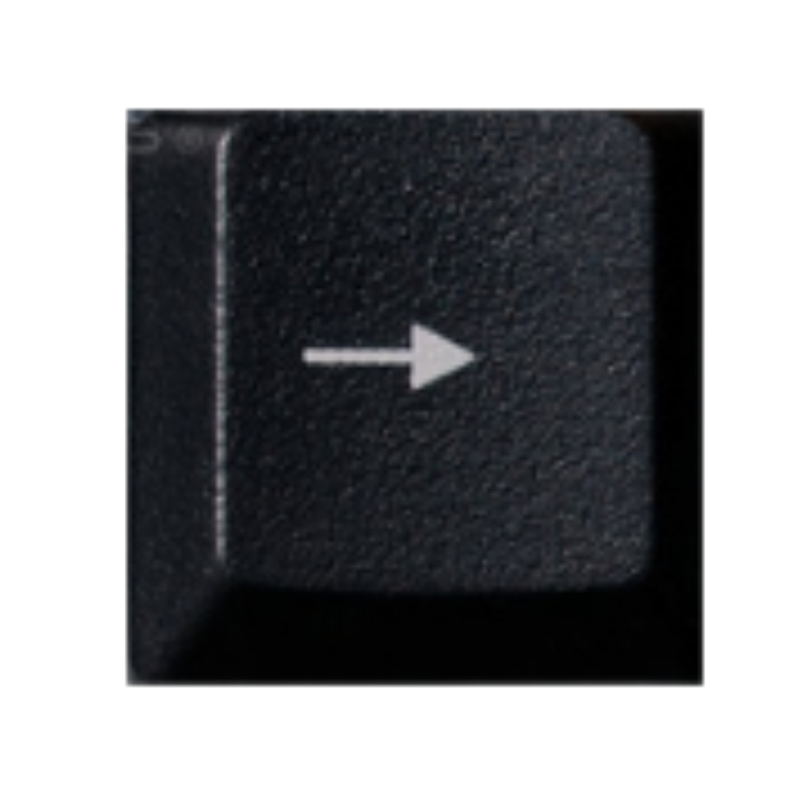

Shiryu é um dos cavaleiros de bronze de Atenas e o segundo mais velho. É o cavaleiro muito sereno, leal, amigo e sério.
Lugar de treinamento: Cinco Picos Antigos de Rozan, China
Cólera do Dragão: Um soco que libera a verdadeira cólera do dragão.
Defesa
Soco
Chute
Técnica Especial
Andar
  → ←